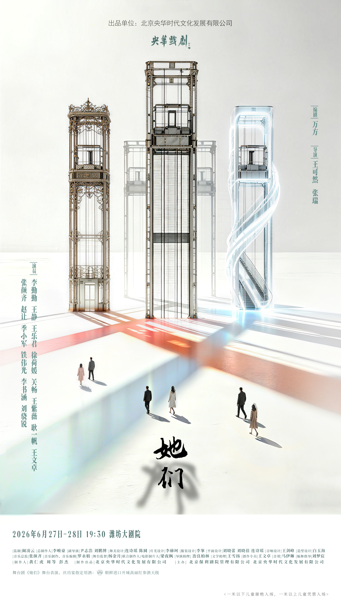
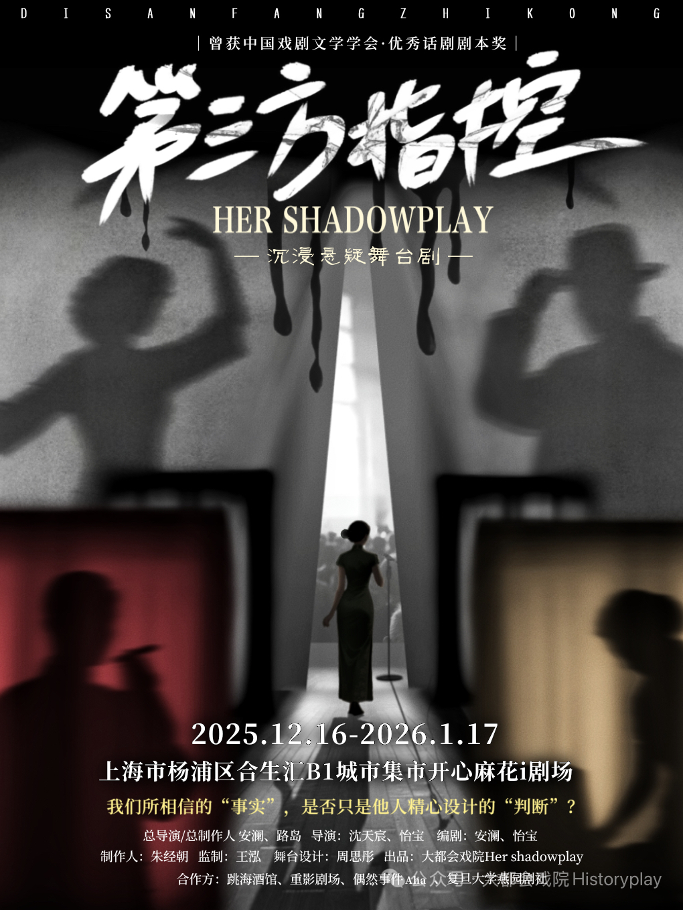

从环境音效制作到特殊效果设计，为每一部戏剧构建独特的声音世界。全案声音设计，涵盖 Cue 表编制、BGM 选曲编辑与多轨实时控制。 Environmental soundscapes, special effects, and full-suite sound design for theatre — from cue sheets to multi-track playback.

全剧声音设计、音效制作、BGM编辑。QLab多轨触发与实时控制。

创排期全剧声音设计，音效与BGM制作。悬疑语境下声音作为叙事工具推动剧情。
Aprilma0521@foxmail.com